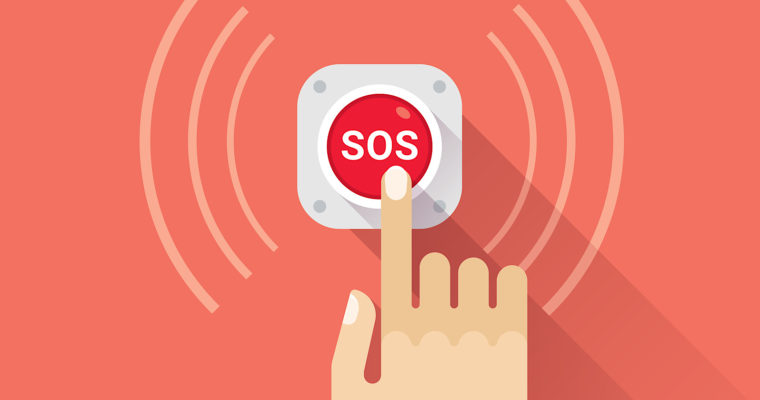

Συμβουλές Προστασίας
- Πλένετε τα χέρια σας συχνά.
- Ακουμπάτε λίγοτερο το πρόσωπό σας.
- Κρατάτε αποστάσεις ασφαλείας.
- Μην επαναχρησιμοποιείτε τις μάσκες.
- Κρατήστε προμήθειες σε τρόφιμα και φάρμακα.

Μια συνεχιζόμενη πανδημία της νόσου του κορονοϊού 2019 (COVID-19), που προκλήθηκε από τον ιό SARS-CoV-2, ξεκίνησε τον Δεκέμβριο του 2019. Αναγνωρίστηκε για πρώτη φορά στην πόλη Ουχάν, πρωτεύουσα της επαρχίας Χουπέι της Κίνας. Ως τις 15 Μαρτίου 2020 έχουν επιβεβαιωθεί πάνω από 169.000 περιπτώσεις, συμπεριλαμβανομένων όλων των επαρχιών της Κίνας και σχεδόν εκατόν σαράντα άλλων χωρών. Έχουν σημειωθεί περισσότεροι από 6.500 θάνατοι που οφείλονται στη νόσο, συμπεριλαμβανομένων περισσότερων απο 3.300 εκτός της ηπειρωτικής Κίνας, ξεπερνούν εκείνους της επιδημίας SARS του 2003. Ωστόσο, από τότε έχουν ανακάμψει περισσότεροι από 76.000 άνθρωποι. Η μόλυνση μεταδίδεται κυρίως μέσω της μετάδοσης από άνθρωπο σε άνθρωπο μέσω σταγονιδίων αναπνοής που παράγονται όταν εκπνέουν οι άνθρωποι (όπως φτάρνισμα ή βήχας) σε απόσταση μικρότερη του ενός μέτρου. Ο χρόνος μεταξύ της έκθεσης και της εμφάνισης συμπτωμάτων είναι συνήθως από 2 έως 14 ημέρες. Τα συμπτώματα μπορεί να περιλαμβάνουν πυρετό, βήχα και δυσκολίες στην αναπνοή. Οι επιπλοκές μπορεί να περιλαμβάνουν πνευμονία και σύνδρομο οξείας αναπνευστικής δυσχέρειας. Δεν υπάρχει ακόμα εμβόλιο ή ειδική αντιική θεραπεία (αν και η έρευνα βρίσκεται σε εξέλιξη). Οι προσπάθειες συνήθως στοχεύουν στη διαχείριση των συμπτωμάτων και της υποστηρικτικής θεραπείας. Οι επαγγελματίες δημόσιας υγείας τόνισαν τη σημασία των βασικών πρακτικών υγιεινής στην πρόληψη της μόλυνσης και εξέδωσαν προτεινόμενες κατευθυντήριες οδηγίες συμπεριφοράς για άτομα που είναι ύποπτα ότι έχουν τον ιό. Το πλύσιμο των χεριών, η διατήρηση της απόστασης άνω των 2 μέτρων από ανθρώπους που βήχουν και η αποφυγή επαφής με το πρόσωπο συνιστώνται για την πρόληψη της νόσου. Οποιοσδήποτε είναι ύποπτος για τη μεταφορά του ιού, συνιστάται να παρακολουθεί την υγεία του για δύο εβδομάδες, να φοράει χειρουργική μάσκα και να ζητά ιατρική συμβουλή, καλώντας έναν γιατρό πριν επισκεφτεί μια κλινική. Η περίοδος επώασης (χρόνος από την έκθεση έως την έναρξη των συμπτωμάτων) κυμαίνεται από 2 έως 14 ημέρες, αλλά μπορεί να είναι μεταδοτική κατά τη διάρκεια αυτής της περιόδου και μετά την αποκατάσταση. Τα συμπτώματα περιλαμβάνουν πυρετό, βήχα και δυσκολίες στην αναπνοή. Ως τις 5 Φεβρουαρίου 2020 η εκτίμηση του ποσοστού θνησιμότητας ήταν το 2% των επιβεβαιωμένων περιπτώσεων, υψηλότερο μεταξύ εκείνων που απαιτούν εισαγωγή στο νοσοκομείο. Ως τις αρχές Φεβρουαρίου του 2020, δεν υπάρχει εμβόλιο και καμία ειδική θεραπεία. Εξετάζονται αρκετές προσεγγίσεις εμβολίων και αντι-ιικά. Τα σχολεία έκλεισαν σε εθνικό επίπεδο σε 22 κράτη και τοπικά σε 17 χώρες, επηρεάζοντας πάνω από 370 εκατομμύρια μαθητές. Η πανδημία έχει κηρυχθεί από τον Παγκόσμιο Οργανισμό Υγείας (Π.Ο.Υ.) Έκτακτη Ανάγκη Δημόσιας Υγείας Διεθνούς Ενδιαφέροντος (PHEIC), με βάση τις πιθανές επιπτώσεις που θα μπορούσε να έχει ο ιός εάν εξαπλωθεί σε χώρες με ασθενέστερα συστήματα υγειονομικής περίθαλψης. Αυτή η κήρυξη ήταν η έκτη φορά που έχει κληθεί το μέτρο μετά από την πανδημία του H1N1 το 2009.